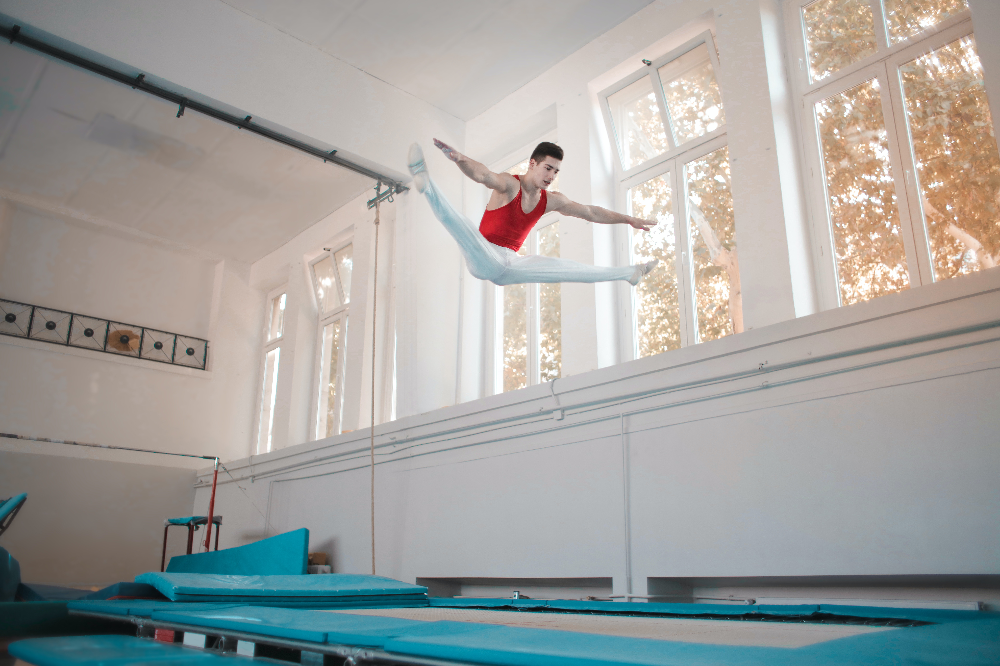
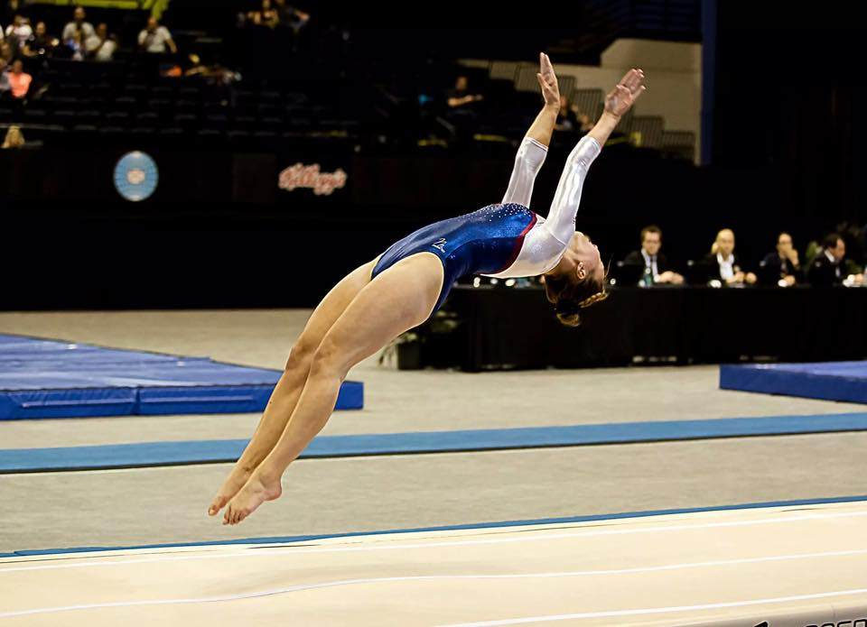
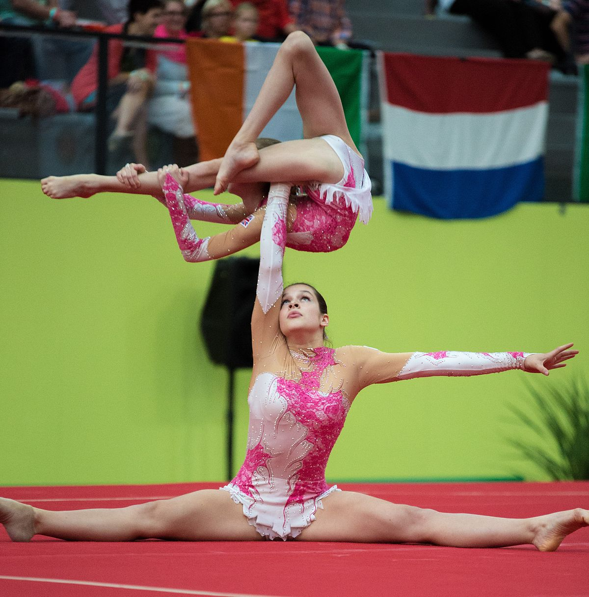
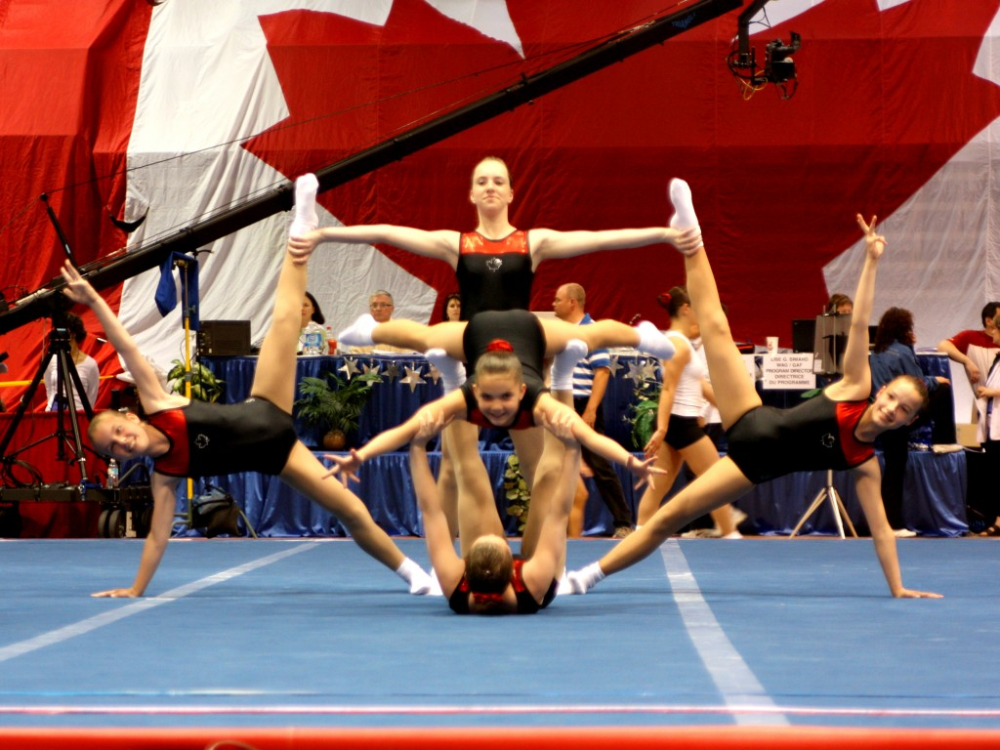

Different Types Of Gymnastics
Artistic Gymnastics
Artistic gymnastics is the most common form of competitive gymnastics. It consists of floor exercise, pommel horse, rings, vault, parallel bars, horizontal bar, and combined exercises (the all-around), which combines the scores of the other six events.
Rhythmic Gymnastics
Rhythmic gymnastics is a type of gymnastics that combines elements of ballet and dance with gymnastics. It is performed with apparatus such as a ball, ribbon, hoop, clubs or rope.
Trampoline Gymnastics
Trampoline gymnastics is a type of gymnastics that involves performing acrobatics while bouncing on a trampoline.

Power Tumbling
Power tumbling is a type of gymnastics that involves performing acrobatics on a spring runway.

Acrobatic Gymnastics
Acrobatic gymnastics is a type of gymnastics that involves performing acrobatic stunts in pairs or groups.

Aerobic Gymnastics
Aerobic gymnastics is a type of gymnastics that involves performing high-intensity movements to music.
